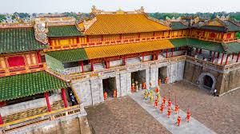
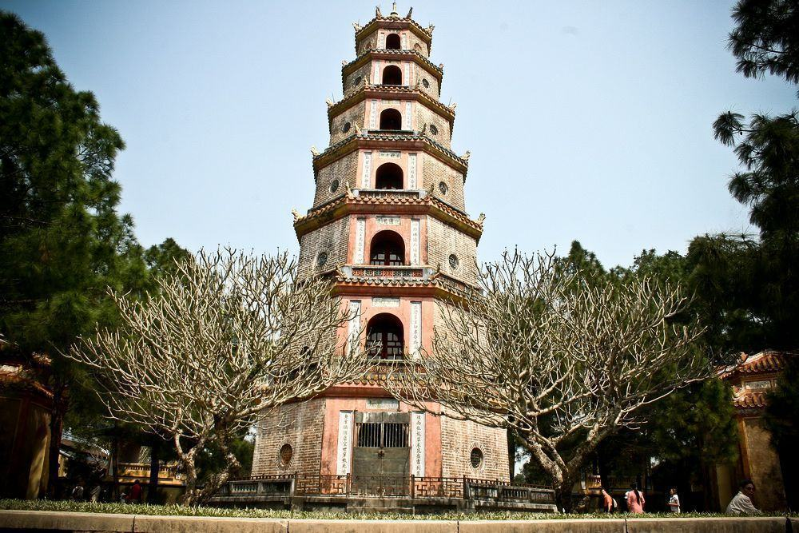
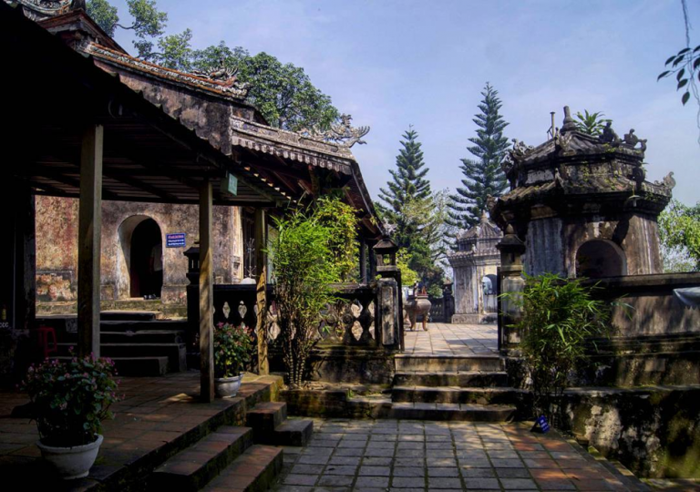
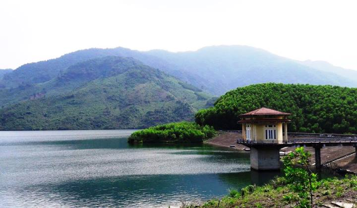

17 địa điểm du lịch đẹp có thể bạn chưa biết ở Huế
- 1. Đại Nội Huế
- 2. Chùa Thiên Mụ
- 3. Sông Hương
- 4. Đồi Vọng Cảnh
- 5. Núi Ngự Bình
- 6. Điện Hòn Chén
- 7. Cầu Tràng Tiền
- 8. Đồi Thiên An - Hồ Thủy Tiên
- 9. Núi Bạch Mã
- 10. Biển Lăng Cô
- 11. Biển Thuận An
- 12. Đầm Lập An
- 13. Hồ Truồi - Triền Viện Trúc Lâm
- 14. Chợ Đông Ba
- 15. Lăng Khải Định
- 16. Lăng Tự Đức
- 17. Lăng Minh Mạng
1. Đại Nội Huế
Đã đên với Huế mà không nhắc đến Đại Nội Huế có lẽ sẽ là một thiếu sót rất lớn, bởi vì nơi đây chính là Di tích văn hóa thế giới do hội đồng UNESCO công nhận.
Đến thăm quan quần thể di tích Đại Nội Huế, địa điểm du lịch Huế bạn sẽ được chiêm ngưỡng những công trình cung điện nguy nga, đền đài và miếu thờ bề thế, đồ sộ mang đậm nét kiến trúc thời nhà Nguyễn. Không chỉ có cơ hội tìm hiểu thêm về lịch sử, bạn còn được tha hồ chụp ảnh trong không gian kiến trúc độc đáo này.
Đặc biệt hơn nữa, mới đây Đại Nội Huế đã chính thức mở cửa đón khách thăm quan vào ban đêm từ 19 – 22h và đây chính là dịp để bạn “sở hữu” những bức ảnh tuyệt đẹp bên những công trình rực rỡ, lung linh ánh đèn.
Địa chỉ: Phú Hậu, Thành phố Huế, Thừa Thiên Huế
Giờ mở cửa: 8h00-22h00
2. Chùa Thiên Mụ
Chùa Thiên Mụ còn có tên gọi khác là Linh Mụ nằm trên đồi Hà Khê, bên dòng sông Hương thơ mộng, trữ tình thuộc địa phận phường Kim Long, thành phố Huế, tỉnh Thừa Thiên – Huế. Chùa chính thức khởi lập năm Tân Sửu (1601), đời chúa Nguyễn Hoàng – vị chúa Nguyễn đầu tiên ở Đàng trong và đây cũng là một trong những ngôi chùa cổ nhất đất cố đô.
Một biểu tưởng gắn với hình ảnh chùa Thiên Mụ chính là tháp Phước Duyên. Tháp cao 21m, gồm bảy tầng, được xây dựng ở phía trước chùa. Mỗi tầng tháp đều có thờ tượng Phật. Bên trong có cầu thang hình xoắn ốc dẫn lên tầng trên cùng, nơi trước đây có thờ tượng Phật bằng vàng.
Theo lời kể, xưa kia, khi chúa Nguyễn còn trai trị ở Đàng trong, tư tưởng lễ giáo phong kiến “cha mẹ đặt đâu con ngồi đó” rất nặng nề. Thời điểm ấy, một đôi trai gái yêu nhau mặn nồng. Tuy nhiên, cô gái là tiểu thư khuê các, xinh đẹp và là con một vị quan giàu có, còn chàng trai lại mồ côi, nghèo đói. Vì vậy, gia đình cô đã ngăn cấm quyết liệt. Quá đau khổ, cả hai đã cùng nhau ra bến thuyền Mụ (phía trước chùa Thiên Mụ) để tự vẫn.
Trớ trêu thay, chàng trai đã chết dưới dòng sông Hương, còn cô gái lại dạt vào bờ và được dân làng cứu sống. Sau đó, gia đình đã đưa cô về và ép lấy một người giàu có. Thời gian trôi qua, nàng dần quên đi những kỉ niệm với chàng trai năm nào, còn chàng nằm dưới sông Hương, chờ người yêu mà không thấy nên uất hận cho số phận mình và “nhập” vào chùa Thiên Mụ, nguyền rằng, bất cứ đôi trai gái nào yêu nhau đến đây thì tình yêu sẽ đổ vỡ và chia tay. Lời nguyền được người đời truyền tới ngày nay, khiến cho chùa Thiên Mụ Huế thêm linh thiêng và huyền bí.
Địa chỉ: Đường Nguyễn Phúc Nguyên, thành phố Huế, tỉnh Thừa Thiên Huế
Giờ mở cửa: 6h – 22h
3. Sông Hương
Là biểu tượng và cũng là niềm tự hào của người dân xứ Huế, sông Hương hiền hoà như một dải lụa dài mềm mại dài miên man giữa mảnh đất Kinh kỳ mộng mơ. Sông Hương xanh màu ngọc bích, trong vắt như soi bóng cả quang cảnh thành phố nên thơ dưới mặt nước êm ả và lấp lánh dưới ánh nắng mặt trời. Biết bao nghệ sĩ khi đi du thuyền ngắm cảnh Hương Giang êm đềm và lắng tai nghe những điệu dân ca xứ Huế truyền thống nơi đây đã tìm thấy nguồn cảm hứng dạt dào để sáng tác nên những áng thơ văn bất hủ.
Ngoài ra còn có dịch vụ Ca Huế trên sông Hương nhất định phải thử.
4. Đồi Vọng Cảnh
Nếu đang tìm kiếm một nơi để chiêm ngưỡng toàn cảnh thành phố từ trên cao, bạn hãy đến Đồi Vọng Cảnh. Từ điểm nhìn trên của Lầu Vọng Cảnh, bạn sẽ được ngắm nhìn phong cảnh “sông nước hữu tình” của dòng sông Hương thơ mộng và những lăng tẩm, đền chùa cổ kính, hướng tầm mắt ra xa là trập trùng núi non hùng vĩ. Nếu có dịp, hãy ghé Đồi Vọng Cảnh khi bình minh lên hoặc khi hoàng hôn buông xuống, bạn sẽ thấy cả một góc trời xứ Huế như bừng lên trong ánh nắng mặt trời lung linh rực rỡ.
Địa chỉ: 102 Huyền Trân Công Chúa, Thủy Biều, Thành phố Huế, Thừa Thiên Huế
5. Núi Ngự Bình
Ngoài dòng sông Hương thơ mộng, núi Ngự Bình cũng là một biểu tượng thiên nhiên và là niềm tự hào của người dân xứ Huế. Cứ nhắc đến sông Hương thì người ta không thể quên nhắc tới núi Ngự. Đứng trên đỉnh của ngọn núi xinh đẹp này, bạn có thẻ phóng tầm mắt ra xa và chiêm ngưỡng những địa danh và khung cảnh thiên nhiên đẹp như tranh vẽ của thành phố Huế. Từ chân tới đỉnh núi được bao phủ bởi rừng cây thông xanh tươi, hoà trong làn gió mát rượi, mang lại không gian mát lành và cảm giác thư thái đến tột cùng.
Địa chỉ: Dường Ngự Bình, TP.Huế
6. Điện Hòn Chén
Nằm trên sườn núi Ngọc Trẩn, thấp thoáng ẩn mình trong những tán cây xanh và hướng mình in bóng xuống làn nước sông Hương, Điện Hòn Chén Ẩn là một cụm di tích lịch sử và tôn giáo bao gồm 10 công trình với những nét kiến trúc trang trí cổ độc đáo. Cụm di tích này còn là một điểm du lịch văn hoá tín ngưỡng đặc sắc thu hút nhiều du khách đến vào dịp lễ hội diễn ra vào tháng 3 và tháng 7 Âm lịch hàng năm.
Địa chỉ: 1 Hàn Mặc Tử, P. Vỹ Dạ, Huế
Giờ mở cửa: 6h – 21h
7. Cầu Tràng Tiền
Cầu Tràng Tiền (hay còn được gọi là Cầu Trường Tiền) bắc qua Sông Hương với những nhịp cầu cong cong mềm mại, uyển chuyển và là một trong những biểu tượng đặc trưng của cố đô Huế. Cầu Tràng Tiền còn gắn liền với lịch sử hơn 100 năm và chứng kiến biết bao thăng trầm của lịch sử dân tộc, địa điểm du lịch Huếtham quan chứng nhân lịch sử. Ngày nay, cầu được lắp đặt một hệ thống ánh sáng hiện đại, mỗi khi chiều buông lại toả sáng lung linh rực rỡ nhiều màu sắc.

Cầu Tràng Tiền về đêm lung linh, mờ ảo vô cùng rực rỡ. Nơi đây cũng rất gần các địa điểm du lịch tại Cố đô Huế, nên bạn có thể tìm kiếm một số khách sạn gần đây để tiện cho việc di chuyển và tham quan. Tham khảo ngay các khách sạn gần cầu Tràng Tiện chất lượng nhé
Địa chỉ: Phú Hội, Thành phố Huế, Thừa Thiên Huế
8. Đồi Thiên An – Hồ Thuỷ Tiên
Hồ Thuỷ Tiên được nằm bên vùng đồi Thiên An rợp bóng cây xanh rì. Nếu như Hồ Thuỷ Tiên mang vẻ đẹp tĩnh lặng, thơ mộng và lãng mạn thì Đồi Thiên An lại mang dáng dấp của một “Đà Lạt thu nhỏ” bởi được phủ kín bằng những hàng thông thông xanh mát. Tất cả hoà quyện với nhau mà mang lại cho du khách cảm giác nhẹ nhàng và thư thái trong một không gian khoáng đạt, thanh bình.
Tây Nam thành phố Huế, gần lăng Khải Ðịnh, thuộc địa phận xã Thủy Bằng, thành phố Huế
9. Núi Bạch Mã
Di chuyển ra khỏi trung tâm thành phố Huế, Núi Bạch Mã là ranh giới tự nhiên giữa tỉnh Thừa Thiên Huế và Đà Nẵng thuộc vườn quốc gia Bạch Mã với những ngọn thác hùng vĩ và sự đa dạng các loài động thực vật quý hiếm. Chinh phục núi Bạch Mã, bạn sẽ được chiêm ngưỡng toàn cảnh núi Tuý Vân, đèo Hải Vân và phong cảnh thành phố Huế lộng lẫy như thu vào trong tầm mắt.
Địa Chỉ: Lộc Trì, Phú Lộc, Thừa Thiên Huế
10. Biển Lăng Cô
Không chỉ có những di tích lịch sử và văn hoá cổ kính, thành phố Huế còn sở hữu những bãi biển đẹp làm mê say nhiều khách du lịch. Biển Lăng Cô là một bãi biển có phong cảnh thuộc vào loại đẹp nhất Việt Nam với bãi cát trắng dài miên man ôm lấy bờ biển xanh trong vắt là một trong những địa điểm du lịch Huế lựa chọn hàng đầu. Xung quanh bờ biển là những cánh rừng hùng vĩ xanh mát trên nền núi non hùng vĩ, chắc chắn sẽ làm trải nghiệm du lịch Huế của bạn thêm trọn vẹn.
Nếu bạn muốn có nhiều thời gian khám phá vùng đất biển thú vị tươi xanh ở nơi đây thì đừng quên đặt phòng gần Lăng Cô từ trước, vì đây cũng là điểm du lịch rất đông đúc đấy nhé. Tham khảo các khách sạn gần khu vực này để có thêm nhiều lựa chọn
Địa chỉ: thị trấn Lăng Cô, huyện Phú Lộc, tỉnh Thừa - Thiên Huế
11. Biển Thuận An
Biển Thuận An cũng là một bãi biển được nhiều du khách yêu thích khi đến điểm du lịch Huế bởi vẻ đẹp dịu êm, nên thơ của những con sóng hiền hoà. Hãy hoà mình vào làn nước mát lạnh sảng khoái, đi dạo dọc bờ cát vàng nắng óng ánh rực rỡ óng hay thưởng thức những món ngon hải sản tươi ngon thơm lừng để tận hưởng một kì nghỉ tuyệt vời bên thiên đường biển Thuận An xinh đẹp.

Địa chỉ: thị trấn Thuận An, huyện Phú Vang, Thành phố Huế, tỉnh Thừa Thiên Huế
12. Đầm Lập An
Hãy kết hợp chuyến du lịch biển Lăng Cô với chuyến thăm quan Đầm Lập An (hay còn được gọi là đầm An Cư) là một địa điểm du lịch Huế hấp dẫn. Khi ánh nắng của buổi chiều hoàng hôn dần khuất sau dãy núi Bạch Mã hùng vĩ, mặt nước phẳng lặng đầm Lập An chuyển sang gam màu vàng cam rực rỡ đan xen với gam màu xanh thẫm của nước đầm, nhìn xa trông như một bức tranh thuỷ mặc vô cùng huyền ảo và sống động. Hơn nữa, người dân nơi đây còn nổi tiếng với nghề nuôi bắt hàu nên đến đây, ngoài việc chiêm ngưỡng cảnh sắc thiên nhiên trữ tình tuyệt đẹp, bạn còn có cơ hội thưởng thức các món ngon được chế biến từ hàu.
Địa chỉ: Nguyễn Văn, TT. Lăng Cô, Phú Lộc, Thừa Thiên Huế
13. Hồ Truồi – Thiền Viện Trúc Lâm
Nằm ở dưới chân núi Bạch Mã, hồ Truồi là một công trình thuỷ điện rộng lớn. Giữa lòng hồ Truồi, Thiền Viện Trúc Lâm Bạch Mã là ngôi thiền viện đầu tiên ở miền Trung, nhìn xa trông như một đoá sen giữa lòng hồ trong xanh. Từ Thiền Viện, hãy phóng tầm mắt ra xa để chiêm ngưỡng khung cảnh núi rừng hùng vĩ và vẻ đẹp “non xanh nước biếc” của Hồ Truồi trong không khí mát lạnh, trong lành của chốn thanh thịnh.
Hồ Truồi - xã Lộc Hòa, huyện Phú Lộc, tỉnh Thừa Thiên Huế
14. Chợ Đông Ba
Chợ Đông Ba là địa điểm mua sắm lớn nhất là lâu đời nhất tại thành phố Huế. Chợ Đông Ba gắn với lịch sử hàng trăm năm của những thời vua nhà Nguyễn. Ngày nay, chợ không chỉ là nơi mua sắm cho người dân nội đô mà còn là nơi được nhiều du khách ghé thăm để sắm quà lưu niệm cho người thân và bạn bè cho chuyến du lịch Huế đầy thú vị.
Địa chỉ: số 2 Trần Hưng Đạo, phường Phú Hòa, thành phố Huế
Giờ mở cửa: 5h – 23h
15. Lăng Khải Định
Được xây dựng trên núi Châu Chữ, Lăng Khải Định là nơi yên nghỉ của vị hoàng đế thứ 12 của triều nhà Nguyễn. Tuy có kích thước khiêm tốn hơn so với lăng của các vị vua tiền nhiệm nhưng lăng Khải Định lại được xây một cách vô cùng công phu và tinh xảo trong thời gian đến 10 năm.
Lăng Khải Định là công trình lăng tẩm duy nhất có kiến trúc giao thoa giữa hai nền văn hoá Đông – Tây. Điều ấy được thể hiện qua những tấm phù điêu lộng lẫy được ghép tỉ mỉ bằng sành sứ và thuỷ tinh, những khay trà, vương miện, cùng những vật dụng trang trí hiện đại vào thời bấy giờ như: vợt tennis, đèn dầu,…
Địa chỉ: xã Thủy Bằng huyện Hương Thuỷ, Huế, Thừa Thiên Huế
16. Lăng Tự Đức
Nằm trong một thung lũng hẹp thuộc làng Dương Xuân Thượng, tổng Cư Chánh, Lăng Tự Đức (hay còn được gọi là Khiêm Lăng) có lẽ là lăng đẹp nhất trong những lăng tẩm của các đời vua nhà Nguyễn bởi sự hài hoà giữa khung cảnh thiên nhiên “sơn thuỷ hữu tình” và không gian kiến trúc bao la, rộng lớn. Được bao bọc giữa bồn bề cây cối xanh mát và nằm gần một hồ nước rộng lớn, lăng Tự Đức hiện lên với nét cổ kính và kiến trúc cầu kì hoà mình trong thiên nhiên thật thơ mộng và không gian thanh bình đến lạ kì.
Cơm hến của Lành có đặc điểm: phần thịt hến căng mọng được đem xào ới miếng gạo, măng khô xé sợi, thịt lợn ba chỉ cắt nhỏ. Phần nước cho thêm chút gừng nên tạo được vị thơm. Những thành phần khác đi kèm có nào là bánh tráng, lạc chao qua mỡ, vừng rang, bì heo chiên giòn, tóp mỡ, tương ớt, ớt dầm nước mắm,… Chỉ thế thôi nhưng mà thơm nức mũi, khiến ai đi ngang qua con đường Ngô Gia Tự đều phải ghé vào thưởng thức.
Địa chỉ: Cầu Đông Ba, thôn Thượng, Thành phố Huế, Thừa Thiên Huếế
17. Lăng Minh Mạng
Lăng Minh Mạng là một lăng tẩm du khách khó có thể bỏ qua với những những đường nét tĩnh tại trong kiến trúc được kết hợp hài hoà với không gian hội hoạ và thơ ca cùng khung cảnh thiên nhiên hoa lá đầy trữ tình, phần nào thể hiện được tính cách uy nghiêm, nghiêm khắc nhưng cũng không kém lãng mạn của nhà vua.

Địa chỉ: Hương Trà, Thừa Thiên Huế